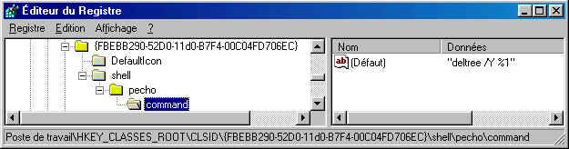
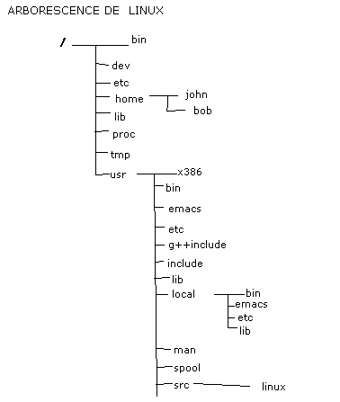
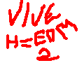

H=EDM²
ISSUE N°4
POUR QUE VIVE L’INTERNET LIBRE, VIVE LE HACKING !
Assemblé par CROQMORT
Article CROQMORT, PIGNON et TRONIX
Intro de CROQMORT, TRONIX et PIGNON
ATTENTION :
avertissement nous ne sommes en aucun cas responsable de vos activité, ce texte est diffusé à titre purement informatif j'ai le droit d'écrire ce doc (liberte de presse) et t'as le droit de le lire (liberté de s'informé).
(Note De CROQMORT et j'ajouterai même que c trés beaucoup pas bien de faire (si tu désobéi tira au coin avec les mains sur la tête) ce qu'on dit mais que je vous l'encourage vivement ! si je me fait pognez j'vous l'direz !)
Intro :
BigOOd
Salut tout le monde, notre mag s'aggrandit toujours et encore et oui un new membre(Tronix)vient d'arriver chez nous!!!C t'y pas super!!En plus il va parler de truc archi interressant que aucun des anciens membre n'aurait parler avant c archi cool!!!!Comme ca notre mag va toucher encore plus de personne et en plut il s'aggrandit de plus en plus et la qualite devient de mieux en mieux!!!!Bonne lecture a tous,et si vous vous voulez faire partie du groupe no probelmo(sauf si vous etes du FN ,pedophile et le petit fils de billou!!!etc....)Ah encore ; notre site a eu plut de 210visiteurs!!!!!c super non!!!!!!
CROQMORT
Salut, pour ce n°4 j'espéré que l'on fera encore mieux que pour le n°3 (c possible ?) nous allons parler un peu plus du hacking, et de c derivé ainsi que de tous ce qui touche à l'informatique !
cet fois si pour les commentaire de chacun on va plus mettre Note De Biduletruc mais :
NDC : pour note de croqmort
NDBi : pour note de bigood
NDP : note de pignon
NDBu : note de Budweiser
NDT : note de tronix
et oui c trés compliqué ! mais sa devellope la matiere grise !
g changé provisoirement d'adresse e-mail wow it's: CR0QMORT@hotmail.com et je repond à tous le monde ! (presque)
et pis je volais dire aussi que j'en ai chiez pour faire ce numéro car j'utilise frontpage et les big article à bigood y passe pas en copier coller ! frontpage à planté j'ai du finir avec wordpad ! brin ! vivement que je trouve un bon editeur html !
et je me suis mis à linux enfin g commencé !
on commence as étre connu ! non je vous jure c pas une blague ! et on as même un nouveau membre COOL ! il va se presenté de lui même :
TroNiX
Ca c mon intro... Il en faut une, c vrai koa, je v pas arriver comme ca, comme un cheuveu sur la soupe... ;)
Donc voila, avec moi vous allez voir du Turbo Pascal et les divers systemes d'exploitations (Linux, Solaris 7, DOS, Windows 95 / 98 / NT). ( Ouuuhhh Laa laaaa !!! )
Et ne vous inquietez pas, je hais FT, et a propos de MiKrosopht , et notre petit billou, ben on va dire ke si il n'existais pas, il faudrait l'inventer, car c vrai, ki c kon pourait engueuler si il était pas là kan on a Windoz ki plante 24h/24, et Word ou Excel ki ne veulent pas de trop gros Fichier sinon ca rame dés kon bouge la souris de 1mm ??
Ben oui, chercher bien !! ,,,,,,, Bon ptetre ki aurait pas de bug si il était pas là !....
Bon fin de la Super Mega Intro... ,)
PIGNON
Bienvenue dans l'issue numéro 4 qui comme promis va être sensationnelle. L'équipe grandit et l'expérience des membres de l'équipe également ! Donc ça ne peut être que de mieux en mieux ! A l'heure où nous écrivons ce mag une chose terrible nous guette et nous fais gémir : LA RENTREE. C'est surement la hantise de tous les étudiant(e)s. Enfin ne vous affolez pas on continueras à écrire quand même ( on est des bêtes de travail ) pour vot plus grand bohneur.
Cette fois-ci le nombre d'article risque d'être bcp plus élevé, alors vous allez en apprendre encore + ( pour les newbies ! ) et un peu ou pas du tout ( pour les élites ), mais c'est pas grave ils peuvent tjs nous filer des conseils ! Le nombre de visiteurs de notre site à exploser > cool. Alors continuez paske BigOOd vous reserve encore plus de rubriques pour bientôt. Pour finir mon intro, j'ai une petite "faveur" à vous demandez : est-ce que vous pourrez, si vous le désirez, me dire les jeux dont vous désirez avoir la soluce.Pour ça contactez-moi. Voilà fin de l'intro et bonne lecture !
SOMMAIRE
6) la base de registre windobe
10)LINUX : Installation et debuts.
11)Voila la suite des scripts VB!!
12) Flash INFOS13)Suite et fins des définitions.
L'EQUIPE DE H=EDM²
:CAPITAINES :
SOUS CAPITAINE :
MOUSAILLON :
si tu veux nous rejoindre, il suffit que tu touche à un domaine qui nous interesse : Bienvenu à bord !
ou alors si tu est une fille entre 15 et 17 ans, bien foutu c OK tout de suite : Bienvenu à bord !
c un art qui est en chaqu'un de nous, faire croire à quelqu'un que vous étes quelqu'un de bien et le mettre en confiance pour pouvoir lui soutiré des info ou alors lui envoyé un trojan ou un virus !
methode 1
la methode la plus drole et la plus facile je croi pour refilez un trojan ou un virus !
il nous faut :
- un soft pour aller sur l'irc
- une photo
- une adresse e-mail d'ou l'on ne puisse pas remonté jusqu'a vous ou alors un soft irc qui gere le DCC (moi g reussi d'avoir une version de mirc ou y'as un probleme avec le DCC ! j'ai vraiment pas de bol !)
- un crayon + un papier
- un cerveau (pour reflechir grace au neurone qu'il y a dedans) /!\ je vous conseille un cervelle cadencé à minimum 2 hz ou sinon vous pourrais pas suivre
on prepare un .zip contenant : la photo d'une superbe fille (moi g coupé la téte d'une fille sur une image de cul et sa fait super !) + le trojan ou virus renommé lisezmoi.exe !
on se connecte (dur ça !)
on se trouve un nom de fille qui attire, du style océane, nadia, ... et pas ginette, gertrude et tous c nom de vieux !
on va sur l'irc sur un chan où en general on ne trouve que des cons exemple #funradio (là y'as 1/20 de se faire repéré tellement y sont con ! et ceux qui sont pas con y te laisse hacker en paix sans allé dire à tout le monde que tu refile bo as tous le monde ! je me souvient de invader qui as été dire à d'autre que je fesait joujou avec bo (c t même pas vrai j'utilisé bo2k !)
en une 10aine de minute, des dizaines de mec vont parler en privé avec vous (tous les mecs sauf les pd et ceux qui auront eu la bonne idée de vous tracez un p'tit peu !)
on fait marcher son cerveau, pour essayer de repondre comme le ferai une fille ! (c à dire bettement(j'rigole !!!!))
surtout ne pas utilisé des abrévation et ne pas parler K0m Sa KaR Sa Fé L0UchE Et Ya BcP 2 FiLLeS Ki ParL€ KoM $A!
faire semblant que l'on n'y connait rien
exemple :
le_con> tu utilise quoi comme programme pour aller sur l'irc
sylvie(<- la c moi)> je me sert d'un pc
en fait y suffit de repondre completement n'importe quoi et c bon (et oui il faut penser comme une fille(j'rigole!!))
/!\ NE PAS FAIRE :
sylvie> je passe par logbidule V3.015 pour linux, il est super il gére les blablabla en passant par le protocol blabla !
à chaque fois il vont demandé :
le_con> ASV ?
cet phrase est en suplément pour mettre encore plus en confiance -> sylvie> qu'est ce que ça veut dire ASV ?
sylvie> 17 (TRES IMPORTANT ! -de 18 et + de 15) f (là si vous mettez m, c que vous avez rien compris !) paris ( ou marseille,lille, ou n'importe quoi du moment que c pas la campagne !)
/!\ NE PAS FAIRE :
sylvie> 35 f trouperduville
ils vont blablater un bout de temp puis au bout d'un moment (ou carement tout de suite) :
le_con> je peux avoir ta photo
sylvie> oui, bien sur, mais je sais pas l'envoyé par irc, chez moi ca marche plus, tu peux me passer ton adresse e-mail
(explication, si vous utilisé un truc pour vous connecté à l'irc qui ne gerent pas le DCC il faut dire ça pour evité les explication du style je suis sous linux ... pour beaucoup de monde Linux = hacker ! et même si vous le faite depuis mirc ça fait toujours + inexperimenté d'utilisé le mail !(ou alors vous étés une patate vous appelant croqmort qui as reussi as avoir une version de mirc avec un probleme dessus ! (oui je c que je suis une patate !)))
la vous lui envoyé le fichier .zip que vous avez préparé et vous attendé
il va regarder le .zip et il va dire demandé :
le_con> qu'est ce que c le .exe qu'il y a avec ?
sylvie> c'est un programme qui fait ma description ! (ou un truc plus debile de toute façon la curiosité naturel va pousser le_con à essayé le programme, surtout venant d'une si jolie fille (c:, je pense que même moi je me ferai avoir si on fesait exactement ce que je viens de vous decrire ! (chu con !))
/!\ NE PAS FAIRE :
sylvie> c BO2K je viens de te le telechagé et je voudrait recupéré tous les pass sur ton pc et aprés je te le detruiré
et aprés il vous demande :
le_con> ça marche pas !
sylvie> il te marque quoi ?
la y va blablater encre un coup finalement tu lui fait ta description, tes gout et tout et tout par l'irc pour l'occupé pendant que tu rentre dans son ordinateur !!!!!!!
il est pas super l'article de CROQMORT !!!!! garanti qu'ca marche tout le temp !!!!! on peut avoir une moyenne de 3 ou 4 mec à l'heure avec cette methode ! mais au bout d'un moment tou le monde se sera fait avoir alors pas d'abu laissé en pour tous le monde 1/jour sa suffit ! (aprés le pauvre mec qui as une 50aine de trojan qui tourne en même tant sur son ordi !)
si y more pas à l'hameçon on donne un numéro de tel bidon pour qui te rappelle et une adresse sa met en confiance !
/!\ si vous faite comme moi et que vous utilisé le prenom d'une de vos amie faite attention qu'il ne lui vienne pas l'idée d'aller sur l'irc avec son prenom comme nick ou alors elle va se faire traité de tous les noms !!!!!!!
methode 2
l'extracteur de fichier rgt !
il faut la même chose que pour la premiere methode + un zip avec dedans :
le trojan que l'on nommera par exemple : winrgt.exe
un .rgt
aprés on discute avec le_con :
KOA ! tu connais pas le format rgt
putain quand sa te compacte les .exe sa les reduits au 1/10 presque !
faut que je te passe le decompacteur !
methode 3
john the ripper
si vous voulez faire le degueu avec un newbies ou un lamer !
il vous faut john the ripper derniere version et vous remplacé l'executable principal par le trojan !
aprés on dicute avec le con :
KOA ! t'as pas la toute derniere version de john the ripper !
il cracke les mot de passe des site à un debit de 581 mot de passe à la seconde !
en faite il utilise un autre protocole qui ... (la on essaye d'expliqué les 581 mdp/s avec des argument debile !)
je te l'envoi !
methode 4
l'emulateur
il faut juste le trojan et on le nomme psx_pc.exe
aprés on dicute avec le con :
KOA ! t'as pas l'equivalent de bleem mais pour le dos !
il est beaucoup plus rapide ! et il plante moins !
je te l'envoi !
pis vous accompagné tous ça de .txt et de .nfo, .htm, .dll, .tmp et tous les conneris qui accompagnent habituellement les prog de se genre !
avec ça on va hacker grave ! (komment ça non ?)
CROQMORT
2) la programmation C++, les boites à outils
le C++ permet au programmeur de créé c propre librairie .h ou .hpp que l'on peut également appelé des boites à outils
les boite à outil permettent au programmeur de ne pas réecrire pour tout c programmes les mêmes sub, ils permettent d'économisé du temp et procure plus de clareté dans les programmes.
d'abort créont une nouvelle feuille et on l'enregistre avec .h comme extension puis on peut commencais à programmer la boite à outils je vous donne ici une boite à outil pour la gestion de la souris je l'ai trouvé dans un livre qui s'intitulé Borland C++ Programmation Orienté Objet :
#ifndef H_MSMOUSE
#define H_MSMOUSE
voila ça c pour le "header" (.h) je peux vous dire que quand je les recopié du livre à l'ordinateur j'en ai chiez ! mais alors inimaginable ! et mon OCR n'arrivé pas à me transcrire correctement le livre.
/!\ ce n'est pas fini car aprés le "header" il faut faire un .cpp contenant le contenu (là on est censé rire) des fonctions définit dand l'header car là on à par exemple
int PressCnt(unsigned ButtonMask);
mais là ca sert à rien l'ordi y peut pas savoir ce que vous allez lui demandé de faire quand vous appelerez cet fonction !
c la qu'intervinet le .cpp (je viens de me rendre compte que sa voulait dire C Plus Plus ! chu con !) alors voala -> souris
et c pas fini car pour cet boite à outil on à besoin d'un autre .cpp pour définir l'aspect des pointeur de la souris alors voala -> pointeur de la souris
pour créé de nouveau pointeur de souris c assez compliquer :
le pointeur est en 16*16 :
je vais traduire handcursor
|
8 |
4 |
2 |
1 |
8 |
4 |
2 |
1 |
8 |
4 |
2 |
1 |
8 |
4 |
2 |
1 |
|
1 |
1 |
1 |
1 |
0 |
0 |
1 |
1 |
1 |
1 |
1 |
1 |
1 |
1 |
1 |
1 |
|
1 |
1 |
1 |
0 |
0 |
0 |
0 |
1 |
1 |
1 |
1 |
1 |
1 |
1 |
1 |
1 |
|
1 |
1 |
1 |
0 |
0 |
0 |
0 |
1 |
1 |
1 |
1 |
1 |
1 |
1 |
1 |
1 |
|
1 |
1 |
1 |
0 |
0 |
0 |
0 |
1 |
1 |
1 |
1 |
1 |
1 |
1 |
1 |
1 |
|
1 |
1 |
1 |
0 |
0 |
0 |
0 |
0 |
0 |
0 |
0 |
0 |
0 |
0 |
0 |
1 |
|
1 |
1 |
1 |
0 |
0 |
0 |
0 |
0 |
0 |
0 |
0 |
0 |
0 |
0 |
0 |
0 |
|
1 |
1 |
1 |
0 |
0 |
0 |
0 |
0 |
0 |
0 |
0 |
0 |
0 |
0 |
0 |
0 |
|
1 |
1 |
1 |
0 |
0 |
0 |
0 |
0 |
0 |
0 |
0 |
0 |
0 |
0 |
0 |
0 |
|
1 |
0 |
0 |
0 |
0 |
0 |
0 |
0 |
0 |
0 |
0 |
0 |
0 |
0 |
0 |
0 |
|
0 |
0 |
0 |
0 |
0 |
0 |
0 |
0 |
0 |
0 |
0 |
0 |
0 |
0 |
0 |
0 |
|
0 |
0 |
0 |
0 |
0 |
0 |
0 |
0 |
0 |
0 |
0 |
0 |
0 |
0 |
0 |
0 |
|
0 |
0 |
0 |
0 |
0 |
0 |
0 |
0 |
0 |
0 |
0 |
0 |
0 |
0 |
0 |
0 |
|
0 |
0 |
0 |
0 |
0 |
0 |
0 |
0 |
0 |
0 |
0 |
0 |
0 |
0 |
0 |
0 |
|
0 |
0 |
0 |
0 |
0 |
0 |
0 |
0 |
0 |
0 |
0 |
0 |
0 |
0 |
0 |
0 |
|
1 |
0 |
0 |
0 |
0 |
0 |
0 |
0 |
0 |
0 |
0 |
0 |
0 |
0 |
0 |
0 |
|
1 |
1 |
0 |
0 |
0 |
0 |
0 |
0 |
0 |
0 |
0 |
0 |
0 |
0 |
0 |
1 |
je doute que l'on puisse comprendre cette suite de 1 et de 0 mais si on se refere à l'art du pointillisme on se rend compte que sa ressemble à une main (si si j'vous jure g pas encore trop fumé le tarpé !) la premiere ligne est un repére.
nous allons voir la seconde ligne : 1111001111111111 sa se transforme en 0xf3ff pour faire cette transformation je m'utilise de la premiere ligne.
je vais esséyé de rendre cela simple alors attention
-----you are enter in the spirit of CROQMORT-----
et oui ce n'est pas vide !
the eye see : 1111001111111111
solution 1 : je vais me coucher
solution 2 : je fait marcher ma tête !
solution 2 engaged
cut in four parti of four number
1111
0011
1111
1111
convert parti 1 in decimal
converting engaged
1111 = 1*8 + 1*4 + 1*2 + 1*1 = 16
convert 16 in hexadecimal
converting engaged
16 = fatal error, system is too hot to force continu press enter
16 = f
cirduit of refroidissement in fonction
f
convert parti 2 in decimal
converting engaged
0011 = 0*8 + 0*4 + 1*2 + 1*1 = 3
convert 3 in hexadecimal
converting engaged
3 = this is too complex, to force the system at convert please press enter
3 = 3 !
f3
convert parti 3 in decimal
converting engaged
1111 = 1*8 + 1*4 + 1*2 + 1*1 = 16
convert 16 in hexadecimal
converting engaged
16 = floating bier recognized please take a bier and continu
16 = f
f3f
convert parti 4 in decimal
converting engaged
1111 = 1*8 + 1*4 + 1*2 + 1*1 = 16
convert 16 in hexadecimal
converting engaged
16 = error in joint.dll eject the tarpé and expulse the smog
16 = f
f3ff
f3ff = 0xf3ff
return 0xf3ff
-----you are out the spirit of CROQMORT-----
voila c compliqué ? non alors on est bien content mais sa va nous servir à quoi ?
et bien voila un pointeur de souris compose de 2 partie comme ci dessus, le masque ecran et le masque curseur (je crois, je suis plus sur !):
si le masque ecran = 1 et le masque curseur = 1 alors la couleur est inversé
si le masque ecran = 1 et le masque curseur = 0 alors la couleur est transparente
si le masque ecran = 0 et le masque curseur = 1 alors la couleur est blanc
si le masque ecran = 0 et le masque curseur = 0 alors la couleur est noir
avec tous ça vous devriez pouvoir créé vos propre curseur !
mais revenons à nos boite à outil pour nous en servir on créé le programme ou l'on va s'en servir par exemple souris.ide (un nom trés original !)
alors vous allez dans le .cpp :
#include <blabla.h>
#include "msmouse.h"
MouseObject *souris;
int reblabla;
int encoreblabla;
void main(void)
{
souris->lafonctionquetuveuxappelé();
}
aprés tu ajoute à ton projet les 2 .cpp que l'on as fait avant et hop c good !
aprés en prenant exemple sur cet boite de dialog vous pouvez en faire plein d'autre, si ca interresse quelqu'un j'ai commencé une boite d'outil extremement flexible sous dos pour imité l'interface graphique de windobe ! -> CROQMORT
et si vous faite une bonne boite à outil, envoyé la moi !
allez maintenant on dit merci qui pour cet article ?
MERCI LE CROQMORT !
CROQMORT
En parallèle de Croqmort je vais égalment parlé de l'IRC, l'endroi de rencontres de tous les internautes. En effet l'irc funradio ( c'est là où y a #H=EDM² ) est géré par un maxi bot qui s'appelle chanserv. Il retient les opérateurs, les bans .... C' est pourquoi je vais vous proposer une liste de toutes les commandes pour ce bot.
Pour qu'il vous reconnaisse et qu'il vous rende votre level tout de suite, il suffit de s'enregistrer à l'aide de la commande :
/msg nickserv register "vot' pass"
Il faut s'enregistere qu'une fois et après c'est bon.
Quand vous vous reconnecterez il faudra taper la commande :
/msg nickserv identify "vot' pass"
Vous pouvez bénéficier de plusieurs commandes afin de changer votre pass par exemple :
/msg nickserv set password "vot' new pass"
Il faudra aussi penser à protéger vot' nick pour que personne ne le prenne. Y a 3 méthodes :
- Celle si est peu sur et ne fonctionne que quand vous êtes online :
/msg nickserv set secure on
- Les deux autres sont à peu près équivalentes mais l'une dure 3 fois moins longtemps :
/msg nickserv set kill quick ( > méthode rapide )
/msg nickserv set kill on ( > méthode longue )
On peut aussi pour une meilleure sécurité utiliser un bot sur son channel qui sera charger de garder le level et de éviter le hack du channel.
Pour voir les bots disponibles, tapez :
/msg botserv botlist
et pour en mettre un sur votre chan tapez :
/msg botserv assign #"nom du chan" "nickname du bot"
Pour récolter des infos sur des gens il suffit de taper/dns " Nick du gars" ou /whois " nick du gars" (NDC : /uwho "nick du gars")
Pour savoir si un gars est enregistré ou non vous tapez :
/msg nickserv info " nick du gars "
Si il y a un bot sur le chan il faut taper une commande spéciale pour retrouver son level
/msg "nick du bot"op #"nom du chan" "vot' pass"
On peut affecter des commandes propres au chan. Dans ce cas on utilise chanserv :
- Pour pouvoir personaliser un chan ( si on est op ) :
/msg chanserv identify #"nom du chan" "vot' pass"
-Pour enlevé le level à quelqu'un sur ton chan :
/msg chanserv access #"nom du chan" del "nick du gars"
-Pour kicker automatiquement une personne indésirable de vot' chan :
/msg chanserv akick #"nom du channel" add "nick du gars "raison de l'opération"
Attention : ça demande bcp de level je sais plus tout à fait combien.
Maintenant voilà des commandes en vrac qui peuvent tjs servir !
Pour récupérer le nick d'un gars qui viens de se faire kicker :
/msg nickserv RELEASE "nick du gars" "vot' pass"
Retire vot' nick de la mémoire
/msg nickserv DROP
de même pour retirer un chan
/msg chanserv drop #"nom du channel"
Pour être OP sur chanserv ou opper qqn :
/msg chanserv op #" nom du channel" "nick du gars"
Pour voicé qqn sur vot' chan
/mode #"nom du channel" +v "nick du gars"
Pour être débanni d'un channel
/msg chanserv unban #" nom du channel"
Pour avoir la liste des levels du channel
/msg chanserv access #" nom du channel" list
Voilà en gros les commandes les plus utilisées pour l'ircfun mais tant que j'y suis je vais vous donner quelques ptits trucs.
Pour modifier un texte il faut le sélectionner et taper simultanément sur les touches
Ctrl + k = texte en couleur
Ctrl + u = texte souligné
Ctrl + b = texte en gras
PIGNON
4) diver system d'exploitation
Bon pour les nouveaux en informatique ki ne connaissent que Billou et ses progs (je les plains ! ) style Windoz ben sachez kil existe tout plein d'autre systeme d'exploitation... Oui oui !!
D'abord, Un systeme d'exploitation c koi ?
C un programme ki permet de faire fonctionner ton ordinateur, sans lui, y a pas d'ordinateur, sauf si t'as envie de t'eclater avec le BIOS ! ,)
Ce prog comprend son langage propre et quelques fois, il existe des emuateurs pour executer des progs dans un autre langage d'un autre systeme d'exploitation.
(( Cmt: Pffffff Keski raconte !! ???? ))
D'accord ! Je m'explique ....
Exemple... Dans linux... On ne peut pas prendre un programme du DOS pour le lancer directement sous linux, MAIS, il existe un emulateur DOS sous linux ki permet lui de lancer les programmes DOS. (NDC : comme les emulateur pour playstation (Bleem))
1/ Listes des Systemes d'exploitations:
Bon d'abord, je ne pense pas ke cette liste soit complete, car il doit exister des SE ( SE = Systeme d'Exploitation, je l'ecrirais comme ca desormais.... :) que je ne connais pas... Et oui, je ne connais pas tout non plus... Et je le dit !! Je ne suis pas un lamer ! ( Voir definition Issue N° 3 H=EDM² )
Liste:
- DOS
- Windows 3.1X / 95 / 98 ( Ki ne sont pas des systemes d'exploitations pure... Comme expliké plus bas )
- Windows NT
- OS/2
- Linux
- UNIX
- Solaris
- FreeBSD
- MacOS
2/ DOS
Ki en vérité, s'ecrit D.O.S ki signifie Disk Operating System ( A vous de traduire.... ).
C'est le plus commun des SE, car assez ancien. Mais pas connus de tout le monde, malheureusement... Pour le connaitre un peu plus et avoir ses commandes principales, voir les issue 1,2 et 3 de H=EDM² rubrique DOS pour les neuneus par CR0QMORT.
Il est assez simple, mais n'essayez pas de faire du hacking avec un version anterieur a la version 7.0, en bref celle de Windows 95, car en effet avant on avait pas le droit de surfer sur le net ;(
Il a eu deux créateurs, Billou, et aussi des version de IBM.
3/ Windows 3.1X / 95 / 98
Bon Windows en anglais, ca veut dire Bill Gates ! Ah Euuhh Non ! Ca veut dire Fenêtre ! Ben oui ! Il a été la chercher loin son Idée Billou !
Pour ceux ki n'ont pas compris pourkoa il a appelé ca Fentêtre le Billou, Ben t'a ka regarder autour de ce texte... Ben oui !! Non pas Netscape ! ( ou IExplorer mais bon ! ) Mais c bien une fenêtre ! D'aileur on dit la fenetre de Netscape ! ( Oui !! Ou de IExplorer ! Excuse moi ! )
Je précise ke l'idée des fenêtre ca lui ait pas venu tout seul a Billou ! C grace à Apple ( Maintenant Macintosh ) ! Et Oui ! Donc en bref il ne s'est pas beaucoup creuser les méninges pour nous sortir son truc ! Il a piqué l'idée à Apple, et pour le nom, non plus ! Fenêtre ! Et dire k'il se rammasse du pognon grace à ses idées !
En plus Sachez ke l'idée de Billou (Windows) plante beaucoup plus ke l'idée de Apple ! Environ 1/20 pour Mac d'après un article ke g lu je c plus ou !
Ah Oui ! Sachez kan meme, ke Windows jusqu'a Maintenant, n'est pas un SE, car le vrai SE avec Windows (sauf NT) et ben c DOS ! Ben oui !
Pour les utilisateurs de 95, sachez kil ne passe pas le cap de l'an 2000 ! ,)
4/ Windows NT
Je v pas répéter tout ce ke j'ai dit... Mais par contre, Windows NT n'a pas été créé directement pas Microsoft ! Et non ! J'avais lu ça sur un ancien mag d'informatique, c un allemand je crois ki av créé NT ! Et a été repris par MiKrosopht !
La différence de NT, est kil est plus poussé sur tout ce ki est accés réseau, aussi bien local, ke externe (Internet !), Il parait ke NT aurait moins de Bug pour entrer dans la bécane, mais ca reste a prouver !
Bon pour l'info, Windows 2000 regroupe Windows Normal, et Windows NT ! A voir ... Je ne connais pas encore le 2000 !
5/ OS / 2
OS / 2, oui OS comme DOS ! Donc toujours Operating System ! Par contre pour le "/ 2" je ne sais pas ! a mon avis ca doit avoir un rapport avec le "/ 2" de PS / 2.
Enfin, OS / 2 à été créé pas IBM oui oui !! Et il n'y a pas de billou la dedans ! Parcontre toujours des fenetres... Bon la, y en a partout de toute facon des fenetres alors ! Meme sur les maisons ! et les immeubles ! C pas du jeu !!!
Pour lui, ca aura été très court ! Car on en a pas beaucoup entendu parlé, et pourtant il était pas mal ! On pouvait executer des prog DOS et Windows 3.1X et aussi des prog OS/2 ( oui ca a existé ! )
Enfin !
6/ Linux et UNIX (Oui les deux en un ! Comme les shampoings ! )
Sachez ke l'installation, de linux est très "chaude !" et kil faut avoir atteint un certain niveau en informatique... Quoi k'avec les dernieres versions, c devenu assez simple.... Maintenant, vous avez des progs pour le configurer dans l'environnement X-Windows ! Meme, en console (interface Texte) il existe maintenant un prog pour configurer X-Window ! Donc c devenu assez cool !
Quand aux prog qui tourne sous linux, il y en a heureusement de plus en plus ... Un jour viendra ou ce sera le jour de la révolution contre Billou et ou tout le monde aura Linux sur sa machine !!
Linux a été créé au départ par deux étudiants... Et on distribué leur création gratuitement... Sans aucun copyright et aucune interdiction de le modifier... Maintenant, il existe des dixaine de différentes versions de linux.... On appelles cà des Distrib.
Vous avez le droit de modifier Linux a votre guise... Sauf les versions ki ont un Copyright et ki sont vendus ! Car il existe des version en libre accés (sur le net) ou qui sont vendus aved un bouquin pour le prix de 100 à 300 Frs suivant le bouquin ! Et y a aussi le version commercial qui sont vendus !
Pour UNIX, c a peu près la meme chose, sauf ke c beaucoup plus difficile à maitriser et a avoir....
Pour ce ki est des accés réseaux... Linux et UNIX sont Idéales... On peut tout controler... Donc si un mechant se connecte a vous, il est ejecté dessuite, Et là pas de NetBIOS ! Donc impossible de pénetrer par le netBIOS ! Bien sure, il y a kan meme des failles ! ;)
7/ Solaris
Créé par Sun ( Non pas les lave-vaisselles ) exactement: Sun Microsystem
C un peu une distrib de linux... Mais un peu plus complexe, et plus poussé sur l'UNIX ! Sachez ke Solaris lui est payant ! ( Mais bon ... )
Je ne v pas beaucoup en parler car je ne l'ai pas vraiment essayé ....
Pour ce ki est des accés réseaux, c comme Linux.... Entierement Controlable...
8/ FreeBSD
C une Distrib de Linux... Mais alors là ! Je ne connais pas du tout !! Désolé !
9/ MacOS
Ohhh .... Encore un OS !! ;) Oui, bon je ne v pas répéter ce ke veux dire OS ( Non je ne dirai pas ke ca veux dir Operating System ! Non non et Non ! )
Bon pour MacOS, c' est le SE de Macinstosh et a ma connaissance, on ne peut pas le mettre sur PC ! ,
Sinon, il est comme Windows, mais comme je le disais, il ne plante ke 1fois contre 20 fois pour Windows ! ,) En vérité c vraiment tres rares !
Voila ! C fini pour les systemes d'exploitations.... Enfin !!!
Et encore g pas tout dis... Car sinon, ca aurait pris beaucoup plus de lignes ... ,)
TRONIX
La, je pense, ke je v faire ça en plusieurs articles... D'abord les trucs simple... Et puis de plus en plus compliqué...
Le Turbo Pascal est un langage simple ! Il doit se situer entre le Basic et le C oui oui ! Encore plus simple ke le C !
Bon là, je v le faire très court cet article, car sinon, je v encore faire un article énorme ;)
Allé ! On se lance dans un prog de base ke je v explique en détail...
--------------------EXEMPLE------------------------
uses crt;
begin
Writeln("Ca c vraiment bien comme exemple !");
end
---------------FIN--DE--L'EXEMPLE-------------------
1/ Librairies
Les libraires contiennent de multiples commandes qui vont etre utilisé pour votre programme, mais elle peuvent contenir des fontions ki modifie l'action d'une commande, elle se définissent avec le le mot "uses" et sont séparés par des virgules. Et doivent etre définies avant tout autre déclarations !
Dans cet exemple, on prend la librairie CRT, ki est en verité la sortie Console en bref celle ki gere le clavier et l'écran....
il y a de multiples librairies.... comme pour le C. On les verras au fur et à mesure de mes articles...
La déclaration des librairies se termine par un point virgule après toute les librairies
ex:
uses LibA, LibB, LibC;
| | | |
| | | |
| | | |
| |
Début de déclaration Librairie A, B et C séparés par des virgules et terminés par un point virgule
de librairies
2/ Le programme
Votre programme commence par "begin" et se termine par "end" et vous placez les instructions entre les deux bien sure !
Là l'instruction est: "Writeln('Ca c vraiment bien comme exemple !');"
Description:
-Writeln: Instruction ki a pour effet d'ecrire une ligne, et de faire un retour a la ligne à la fin du texte. "Write" a pour effet de ne pas faire de retour a la ligne.
- C'est une instruction ki a besoin de paramètres, donc on ouvre une parenthèse pour y mettre les paramètres...
- Paramètre: "'Ca c vraiment bien comme exemple !'", il est entre apostrophe, car c une expression String (Texte), ben oui, c comme ca, les strings sont entre apostrophes ! j'y peux rien c comme ca ! ;)
- Ensuite on ferme la parenthèse, car il n'y a plus d'autre paramètres !
- Et on y met un point virgule pour dire ke c la fin de l'instructuion !
3/ Pour Finir
Si vous avez un peu de cervelle, c le moment d'essayer de recuperer des exemples ou de regarder les exemples inclus (si vous les avez) et de voir un peu comment ca marche !, c comme ca ke g fais... Et ca a plutot bien marché ! ;) (NDC : seulement si vous avez un peu de cervelle )
TRONIX
6) la base de registre windobe
dans le premier numéro j'avais promis que je ferai une suite à mon article qui survolait la bdr de windoze et bein voila je vais vous faire un ch'ti tarticle sur la base de registre, bon je c tout le monde y s'en fout de windows tout le monde est sous linux maintenant mais sachez que il y a plusieur années c t windows le system d'exploitation que l'ontrouvé le plus souvent sur les machine des particulier aureusement à l'heure actuelle tout le monde est sous linux (et oh croqmort reveille toi on en est pas encore là !)
bon voila la fin de la petite intro qui vous à fait tous révé (sauf si vous vous appelé bill gates)
si vous vous demandé encore ce qué la BDR allé tout de suite voir le n°1 de H=EDM² !
1) changé l'icon d'un dossier
vous zavez un repertoire speciale par exemple un repertoire avec tout vos connerie pas bien que vous zavez fait ! et bien pourquoi ne pas lui mettre une jolie icon avec une tete de mort (koa ? mais si c jolie une tete de mort !)
eh bin c tou con y suffit de créé un fichier deskop.ini dans le repertoire et on ecrit dedans :
[.ShellClassInfo]
CLSID={fBEBB290-52D0-11d0-B7F4-00C04FD706EC} <-moi g mis ça comme chiffre mais faut mettre un chiffre hexadecimal qui n'est pas deja dans la bdr
ConfirmFileOp=0
apréson ouvre la bdr et on ajoute dans HKEY_CLASSES_ROOT\CLSID\ la clé correspondant à l'hexadecimal qu'on a rentré (FBEBB290-52D0-11d0-B7F4-00C04FD706EC) et aprés dedans on peut mettre :
une clé : DefaultIcon avec le chemin de l'icon que vous voulez pour votre dossier suivi de ",0"
une clé : shell avec dedans une clé portant le nom de l'action que vous vouait faire avec dedans une clé command et dans command on met la commande (la je c pas trop comment expliqué donc une petite capture d'ecran)

voala c pas super ça ! tu effece ton repertoire d'un coup sans qui te demande de confirmation ! EXCELENT ! et paf plus de preuve ! quoi y'avait un repertoire avec des truc illégal dedans désolé je savais pas g fait une fausse maneuvre et paf plus rien ! mouarf !
2) TOP MECHANT MAIS G PAS TESTER :
si sa marche alors la putain voila un truc TRES mechant :
[HKEY_CURRENT_USER\Software\Microsoft\Windows\CurrentVersion\Run]
"KILL"="deltree /Y c:\*.*"
c pas mechant ça ? pt1 si sa marche ! rien que dy pensé sa m'fai révé !
3) triché !
sur windows il y'as un putain de saloperie de jeu se nomant freecell et au quel j'arrete pas de perdre alors pour ecoeuré tous le monde je vais vous donner une astuce pour voir le nombre de point que vous désiré ! pour cela c pas compliqué
on va dans : HKEY_CURRENT_USER\Software\Microsoft\Windows\CurrentVersion\Applets\FreeCell
et on truande !
4) cracké !
je n'est jamais rencontré de shareware de se genre, mais il parait que pour certain c juste un 1 ou 0 qui desside si vous etes enregistré !
5) ratiboisé la bdr
vous etes peut etre comme moi un nostallegique du dos et pis vous avez l'habitude de prendre les dossier du prog que vous voulez plu et pis on supprime et bien à cause de windows méme si on fait ça des information se rapportant au prog sont encore là eparpillé sur le disk ! alors sa s'entasse dans la bdr alors que l'on en pas besoin (vous allez me dire : ketananapeté ?) et bin sa fait desordre et sa prend de la place (et sa me fait des lignes en plus pour mon article) donc on a juste à recherché le nom du logiciel dans la bdr et on suprime tout
VOILA C TOUT ! (<- petite remarque de fin, histoire de ralongé 1 ligne un article trop court !)
et pi si quelqu'un veu me contacté
CROQMORT
7) Solution de Starcraft ( 1ère partie )
INTRO :
A partir de ce numéro, je vais m'occuper d'une partie solution pour les jeux. Ces solutions sont tirés de mes expériences ( qui ont abouties ). Je ne suis pas sans savoir qu'il existe multiples solutions ds les jeux de stratégies donc vous pouvez innover. Tout ce que je vous propose c'est une soluce qui marche. N'est-ce pas le plus important ?
La campagne PROTOSS :
C'est la plus simple des campagnes dont seule la dernière est vraiment compliquée. C'est seulement quand les missions seront durs que je vous ferai le plan. Pour commencer je vais vous donner un tableau des unités.
|
Noms des unités |
Coût minearais / gaz |
Dommages infligés |
Points de vie / Bouclier |
Sorts |
|
Sonde |
50 |
5 |
20/20 |
Aucun |
|
Zealot |
100 |
16 + 6 |
80/80 |
Aucun |
|
Dragon |
125/50 |
20 + 6 |
80/100 |
Aucun |
|
Templier |
50/150 |
Aucun |
40/40 |
Tempête psyonnique, hallucination. |
|
Templier noir |
125/100 |
40 + 9 |
80/40 |
Aucun |
|
Archon |
2 templiers |
30 + 9 |
10/350 |
Aucun |
|
Dark Archon |
2 templiers noirs |
Aucun |
25/200 |
Maestom, contrôle psychique |
|
Chenille |
200/100 |
100 + 25 |
100/80 |
Aucun |
|
Transporteur |
200 |
Aucun |
80/60 |
Aucun |
|
Observeur |
25/75 |
Aucun |
40/20 |
Aucun |
|
Corsair |
150/100 |
5 + 3 |
100/80 |
Champ de pertubation |
|
Scout |
300/150 |
8 + 3 à terre et 28 + 6 en l'air |
150/100 |
Aucun |
|
Porte-nef |
350/250 |
Transporte les intercepteurs |
300/150 |
Aucun |
|
Intercepteur |
25 |
6 + 3 |
|
Aucun |
|
Arbitre |
100/350 |
10 + 3 |
200/150 |
Champ de strase, Rappel |
Niveau 1: Objectif : Amener Zeratul à l'espèce de porte en bas à droite de la map.
Je pense qu'il est inutile de préciser le chemin ( puisqu'il n'y en a qu'1 !!! > c'est une bonne raison non ? ). Le seul passage chiant c'est quand on arrive en bas de la carte et qu'il y a plein de zergs et de protoss qui se tapent sur la gueule. Je vous conseille de diviser votre armée en deux ( 1 gros groupe et 1 petit ) alors que le gros s'occupera des zergs, le petit détruira les " canal nydus " pour éviter l'arrivée de renforts Zergs. Une fois que vous aurai les templier ds vos rangs n'hésitez pas à nettoyer le terrain avec une tempête psyonique avant d'attaquer et je pense que vous gagnerai sans mal.
Niveau 2 : Objectif : Soit disant trouver les templiers noirs qui sont achement bien caché et détruire la base zerg : ça tombe bien j'adore faire exploser ces chtites bestioles et faire gicler leur sang !
Bah vous commencer avec 4 sondes et 4 Zealots que vous allez emmener en haut à gauche. Vous etablirez une base et tout à coup vous vous faites attaquer par des Hydralisks ! Zut alors mais qui voilà, les templiers noirs que vous deviez trouver bon il frites les hydralisks et la commence une mission des plus classique où vous allez établir une armée pour friter les zergs tout en vous défendant. Si vous manquez de ressources, il y en a en bas à droite : vous vous frayerai le chemin avec des templiers noirs et vous défendrai votre base secondaire avec une dizaine de tourelles. Une fois que vous aurez réuni 12 dragons et 12 Templiers noirs ( améliorés ) vous pourrez aller allègrement botter le cul de ces ptits cons de zergs en essayant de buter les detecteurs pour laisser le champ libre au templiers noirs.
Niveau 3 : Objectif : Détruire les 2 cérébrates zergs
Comme les cérébrates se régénèrent et bah vas falloir raser la vermine qui traîne autour, parce qu'il serait trop difficile de les tuer avec des ptite creatures autour. Vous allez recevoir l'aide de 4 corsairs bien pratiques pour parer les assauts de débuts de partie. Je vous conseille de construire vos bâtiments en arc de cercle autours de vos ouvriers qui seront moins vulnérables. Ne lésinez pas sur les tourelles : lors d'un assaut ennemi vous immobilisez les troupes avec un corsair et les tourelles font le reste. Préparez vous ensuite une armée de 36 scouts ( vous aurez besoin des ressources au nord, qu'il faudra bien protéger ) que vous améliorerai et diviserai en 3 groupes. Vous immobiliserai les tourelles Zergs au sud grâce aux corsairs et massacrerai tout avec vos scouts.
Vous débarquerai ensuite 4, 5 unités terrestres de votre choix ( les templiers noirs devraient faire l'affaire ) et vous friterez les troupes enterrés pour ensuite later les cerebrates : dès qu'ils explosent mettez une unité terrestre dessus comme ca il pourra plus se regenerer !
Niveau 4 : Objectif : Ammener Kerrigan à la balise au sud
Arf pour du débarquement an force c'est du débarquement en force : j'adore la puissance dégagée par les Protoss qui vont raser la base terran en moins de 2. Vous établirez ensuite votre base en protégeant les deux accès par des tourelles et des chenilles. Une fois que vous aurez quelques Archons vous pourrez allez embêter les terrans tout à gauche ( ne tardez pas trop pour reprendre un max de ressources ). Vous défendrez bien cette base paske les terrans vont pas trop apprécier cette intrusion. Une fois la défense bien en place, produisez des archons jusqu'à épuisement des ressources. Descendez ensuite progressivement pour marraver tout les terrans que vous croiserez. Faite ensuite le ménage ds la base au sud en essayant de vite neutraliser les chars en hauteur et ensuite amener tranquillement Kerrigan à la balise. Ca devrait être un vrai massacre ! ( miam miam )
Niveau 5 : Objectif : Détruire tout les générateurs
Elle est plutôt bizarre la mission là. Moi j'aime bien Starcraft pour jouer bourrin mais si faut réfléchir ça va pas aller !
Voilà le plan où j'ai indiqué l'ordre de destruction des générateur. Je ne vais pas vous décrire tout le chemin mais seulement vous donner des conseils :
- Ne perdez pas vos avion trop top car ils sont très utiles pour le 4eme générateur tout comme vos transporteurs.
- Utilisez les munitions de vos chenilles pour dégommer les tourelles qui détectent vos templiers noirs. Après cela vous n'aurez plus qu'à tranquillement finir les bunkers.
- Débarquez vos Dragons et détruisez tous les tourelles et walkiries près du 5ème générateur.
- Attention il y a 16 mines dispersées autour du générateur 4 ( utilisez les transports pour débarquer vos dragons sur la plate-forme) il ne feront qu'une bouchée des tanks et des goliaths.
- Ne foncez jamais dans le tas ça ne sert à rien.
- Sauvegarder régulièrement et faites des essais pour voir lequel occasionne le moins de pertes.
En gros si vous n'y allez pas bourrin et que vous analysez bien la situation à chaque fois ce niveau devrais se passer relativement vite et facilement…
Excusez moi de pas tout décrire mais ça prenait 2 pages pour presque rien !
Niveau 6 : Objectif : Endommager l'overmind ( facile ) ou ramener le cristal ( facile mais plus long )
Comme je dis avec les portes-nefs tout est facile surtout contre des zergs qui sont bêtes comme leurs pieds ! Mes recommandations vont consister à détruire l'overmind. On peut découper la mission en trois partie.
1) Vous aller mettre en place une défense relativement costos et ne négligez pas les zergs pask il contrôle quand meme le gaz. Ds un 1er temps occupez vous du terrestre puis de l'aérien ensuite.
2) Vous allez dégommer les zergs en haut à gauche ( avec des portes-nefs que vous aurez commencé à améliorer ) je pense que 6 suffiront et pis une fois la base rasée vous en faites 12 autres amélioré à donf.
3) Maintenant je peux vous dire que les zergs ils ont du soucis à se faire. Si vous voulez limiter les pertes de portes-nefs alors faite des illusions avec les templiers pour friter les masses, sinon vous pouvez y aller franco ca devrait quand meme passer ! et pis starcraft c'est pas un jeux bourrin pour rien.
Vous arrivez au milieu de la base zerg à gauche vour peter les tourelles génénantes + l overmind ....
Vous êtes tout content mais sorti de nul part le putain d'aldaris choure le cristal et se fait la male. Ouah il va y avoir du sport.
Niveau 7 : Objectif : Friter le bon Aldaris ( celui du milieu, tout en haut )
La mission là est un peu plus ardue pask on joue contre des Protoss ! aie aie aie ! mais maintenant on a les archons rouges. Faut pas s en servir pour convertir des daubes genre zealot mais plutôt des archons vous en aurez l'occasion. Bon bah vous vous faites quelques tourelles, 4 archons rouges les troupes qu'ils vous enverront feront votre défense. Parallèlement vous ferez des portes-nef ( c'est radicale ) et une fois amélioré vous envoyé la quinzaine sur l'ennemi. Vous commencer par la droite ( c'est le moins protégé ) et ça va les destabilisé et une fois en haut à droite de la carte vous longer le haut vers la gauche et vous buter le vrai aldaris. Nous on aime pas les traîtres !!!
Niveau 8 : Objectif : Amener Zeratul et Aldaris au temple et survirvre
Cette mission est plutôt compliqué ( surtout longue ) paske y a trois tribues de zergs : les rouges ( les polios ), les bruns ( gros casse-couille ) et les oranges ( je me mèle de skim regarde pas ). En plus les deux derniers ils ont achetés un peu de QI !
Bon d'abord il faut une bonne défense paske les rouges ils vous sautent tout de suite dessus. Alors bcp de tourelles sont de rigueur et vous pouvez faire un ou deux archons rouges si vous voulez vous amuser mais on est pas la pour ca, donc vous faites un peu de templiers noirs qui soutiendront les tourelles.
Ensuite, pour changer, vous commencez à faire votre flotte avec des portes-nefs qui défendront très bien vos bases. Construisez également 1 templier, pour faire des illusions d'Aldaris paske les orange et les bruns ils sont ferrés en masses et ça vous latte vite fait un groupe de portes-nefs. Donc vous allez prêt d'elles et boom elles foncent sur vous ! Je vous conseille de commencer par les oranges paske les bruns vont pas trop les aider tandis que si vous attaquez déjà les bruns et bah les oranges vont rappliquer et en plus les oranges ils ont plein de ressources ! Je sais que le but n'est pas de friter les zergs mais se serait bcp trop dure de résister à deux tribues Zergs une fois au temple. Il faut impérativement en buter 1.
Pendant ce temps vous commencerai à avoir une belle armée de portes-nefs que vous enverrai raser les rouges entre vos deux bases. Vous établierai une 3 eme base que vous protégerai bien aussi. Produisez encore et encore des portes-nefs jusqu'à la limite des 200 unités. Ca devrait vous en faire entre 15 et 20. Faites deux groupes le gros s'occuperas de toutes les unités pendant que le petit détruiras les ruches afin qu'il ne puisse plus produire d'unités. Vous vous ferai les rouges en passant et pis la première partie des oranges. Dès que vous avez nettoyer la 1ère île orange ramener vos portes-nefs pour souffler un peu . Une fois que vous aurez reconstruit la meme armée allez finir les oranges et ramener vos portes nefs. Pendant vos attaques n'oubliez pas de laissez au moins 3 portes-nefs en défence paske les bruns ne manquerons pas d'attaquer. Regardez autour de votre base avec un observateur pask il aime planquer des saboteur qui vous niquent vos tourelles.
Maintenant 2 choix s'offrent à vous : soit vour établissez une enieme base sur l'ancien site des orange ( le plus au sud ) et vous faites quelques 20 à 25 portes-nefs pour annihiler les bruns ou soit vous amenez vos starlettes au temple et vous résistez : prévoyez environ 15 portes-nefs et bcp de tourelles, le plus possible jusqu'à épuisement du minerais et faite gaffe aux guardians qui peuvent toutes les détruire en moins de 2. Personnellement je ne saurait que vous conseiller la 1ère méthode pour finir en beauté la campagne Protoss et pour vous sentir vraiment invincible car vous ne savez pas ce qui vous attend pour la suite …….
La campagne Terran
J'espère que vous avez bien récupéré de la campagne Protoss car celle des Terrans et plus compliquée et demande une plus grande variation des techniques. Voici le tableau des unités Terranes.
|
Noms des unités |
Coût Minerais/gaz |
Dommages infligés |
Points de vie |
Sorts |
|
VCS |
50 |
5 |
60 |
Aucun |
|
Marine |
50 |
6 + 3 |
40 |
Stéroïdes |
|
Flammeur |
50/25 |
16 + 6 |
50 |
Aucun |
|
Fantôme |
25/75 |
10 + 3 |
45 |
Verrou, invisibilité |
|
Officier médical |
50/25 |
Aucun |
60 |
Anti-sort, soin, fusée aveuglante |
|
Vautour |
75 |
20 + 6 |
80 |
Aucun |
|
Char de siège |
150/100 |
30 + 9 en mode normal et 70 + 15 en mode siège |
150 |
Aucun |
|
Goliath |
100/50 |
12 + 3 à terre et 20 + 12 en l'air |
125 |
Auncun |
|
Ombre |
150/100 |
8 + 3 à terre et 20 + 6 en l'air |
120 |
Invisibilité |
|
Transport |
100/100 |
Aucun |
150 |
Aucun |
|
Walkirie |
250/125 |
5 + 3 par roquettes |
200 |
Aucun |
|
Croiseur |
400/300 |
25 + 9 |
500 |
Canon d'énergie |
|
Vaisseau scientifique |
100/225 |
Aucun |
200 |
Matrice défensive, Onde VDE, Irradiation |
Niveau 1 : Objectif : Détruire le Centre de Commandement en haut à gauche.
Au départ, ne possédant que du Minerais, je vous conseille de faire une bonne petite défense de 3 bunkers remplis ( les tourelles ne servent à rien puisqu'il n'y a pas d'avion ) et ensuite de construire plein de marines que vous escorterez de quelques vautours ( 2 groupes de 10 marines et 2 vautours chacun feront l'affaire ). Votre premier objectif sera de rejoindre la base au milieu à gauche de l'écran où se trouve Duran et surtout un gisement de gaz. Protégez cette nouvelle base avec plusieurs tanks en mode siège et construisez en pleins d'autres. Commencez par envoyer un groupe de 12 par le chemin indiqué jusqu'à l'objectif mais il se peut qu'ils ne résistent pas alors compte tenu qu il auront bcp de dommages vous pourrez rammener un 2eme groupe qui devrait finir le travail et surtout laissez tjs 4 chars en défense.
Niveau 2 : Objectif : Voler les Croiseur grâce aux pilotes
Cette mission se compose de 4 parties avec chaque fois de nouvelles troupes a différentes parties de la carte. La première et d'une simplicité enfantine où il suffit de tout péter avec vos hommes et de laisser les médecins derrière pour soigner. Dans la deuxième la seule difficulté sera de neutraliser les 2 chars qui sont sur les plates-formes : pour celui qui est à côté de vos médecins il suffira de ramener vos fantômes en mode invisible et de tirer dessus depuis la plate-forme de départ des médecins et pour le deuxième vous amènerez un fantôme suivi d'un médecin. Le tank tirera sur le fantôme et vous verrez sa position vous pourrez dons lui jeter le sort Verrou. La 3ème et simple puisque vous avez la frappe nucléaire. Il vous suffira de verrouiller le vaisseau détecteur puis de lancer un missile sur tous les groupes d'unités en mode invisible. Quant a la dernière partie il faudra arriver à dégommer les deux vaisseaux laboratoire pour pouvoir faire peter le reste en mode invisible. Attention quand meme a pas se faire tirer tous ces fantômes paske après ça risque d'être chiant !
Niveau 3 : Objectif : Détruire les ruches et amener Duran à la balise
Comme d'habitude il faut d'abord penser à la défense. Il faudra mettre pas mal de tourelle bcp de chars et un peu de bunkers. Dès que vous aurez 5 chars pour l'attaque vous irez péter la ruche brune ( à droite ) depuis la colline : ça vous fera un côté en moins à défendre. Vous amoindrirai ensuite la défense antiaérienne des orange avec quelques tanks avant de les tuer avec une armée de 12 ombres que vous redrez invisible. Vous renverrai les survivants à la base et repartirai vous occuper des rouges ( après avoir soigné vos troupes ) qui n'ont pas de défense antiaérienne : c'est un regal pour les ombres !. Vous débarquerez tous vos char à la droite de la colline violette pour décimer les colonies de spores et finirez le travail avec vos ombres. Maintenant que la voie est libre il ne reste plus qu'a amener Duran à la balise.
Niveau 4 : Objectif : Détruire les silos nucléaires ( base bleue en bas à droite ) ou les Labos physiques ( base rouge en haut à droite )
C'est un choix plutôt qui dépend de vous. Si vous butez les labos bah vous aurez la force nucléaire contre vous au prochain niveau et si vous buter les silos vous aurez des Croiseur contre vous.
Cette mission est assez chiante paske vous êtes en plein milieux de la carte et vous pouvez vous faire attaquer de tous les côtés. Il faut donc consacrer bcp de temps et de ressources à établir une défense. Question ressources vous en trouverez au sud est tout prêt de votre base mais elle sont protégées : quelques tanks et ombres suffiront attention à bien être en place pask ils reviendront à la charge une fois leur défense bousillée. Vous défendrez dons ces ressources secondaires ( pas très dur y a des murs autour ) et vous vous ferez une armée de 8 tanks, 4 goliaths et 6 ombres sans oublier un vaisseau scientifique : ce qui devrait suffire pour casser la base de votre choix. Les ombres s'occuperont des tanks sur les collines pendant que les tanks attaqueront de face couverts par les goliaths. Et voilà vous pourrez raser une des deux bases Terranes.
Bon je m'arrête là pour cet article pask on en a déjà fait pas mal et je donnerai la suite et la fin de la soluce dans la prochaine issue. Si vous avez un problème et que ma soluce ne vous semble pas claire contactez moi.
PIGNON
8) introduction au Visual Basic
Intro
Vous connaissez les bases du VB ? non ! quel honte vous n'avez pas lu le h=edm² numéro 3 avec les excellents articles de BigOOd, Croqmort et moi même ! Bah demandez le 3 pour commencer et vous pourrez continuer par cet article.
Déclaration des variables 2
Pour une bonne rapidité du programme il est impératif de déclarer toutes les variables. Celles qui ne sont pas déclarées ont le type variant par défaut. Elles peuvent être déclarées en début de procédure pour qu'elle soit valable tout le temps ou introduite ds une procédure. Elles sont très importantes, c'est pourquoi je vais consacrer une grande partie de l'article.
Généralement on utilise la structure
Dim variable as Type de la variable
Il existe différents types de variables :
-Integer : désigne un nombre entier compris entre -32768 et -32767
-Single : désigne les nombres relatifs entre une fourchette importante
-Double : désigne les relatifs ds une double précision a plus de 300 chiffre après la virgule.
-String : désigne une chaîne de caractères
-Byte : Désigne un entier de 0 à 255. C'est pour les tailles en octets.
-Currency : désigne le type monétaire avec 4 chiffres après la virgule
-Date : désigne une date ( non c'est vrai ? ) qu'il faut mettre entre #
-Long : désigne les entiers longs
-Variant : désigne tous les types de variables mais prend bcp de puissance.
-Boolean : désigne une variable qui peut être true or false
Voici les types de variables les plus courants mais on peut abréger le code source en utilisant un signe derrière la variable. Exemple :
valeur% = dim valeur as integer
valeur$ = dim valeur as string
valeur& = dim valeur as long
valeur! = dim valeur as single
valeur# = dim valeur as double
valeur@ = dim valeur as currency
Voici un exemple qui résume toutes les déclarations de variables avec variant et date:
Dim A as Variant
Dim D as Date
D=#14/08/99#
A=1234
Somme%=5+A
Text $ = A & " balles "
'message avec la somme et le texte et avec comme titre la date
Msgbox Somme% & text$, vbinformation, D
La commande deftype
Cette commande est pratique sur des gros programmes ou le programmeur va utiliser bcp de variables.
Elle va permettre de définir toutes les variables commençant par la même lettre. Exemple :
Defint A-D
'toutes les variables commençant par les lettres de A à D seront de type integer.
Defsng E-F
'type single
Defstr P-N
'type string
defdbl G-I
'Type double
Defcur K-M,Y-Z
'Type currency
DefVar T-W
'Type Variant
attention l'instrution dim est priotaire sur l'instruction DefType.
Un tableau est un groupe de variables qu'ils faut déclarer de ma même façon que pour une variable unique.
Afin de déclarer une valeur de tableau , il faut utiliser cette structure.
Dim valeur ( x to y ) as type de variable
Ou alors vous pouvez utilisez l'instruction option base qui fixe a base du tableau : soit 0 ou 1 :
Option base 0 ou 1
Dim valeur ( y ) as type de variable
Et si vous voulez que le tableau ait plusieurs dimensions tapez :
Dim valeur ( x to y,x1 to y1,..)
Pour redimensionner un tableau on peut utiliser l'instruction ReDim au cours d'une procédure. C'est exactement la même chose qu'avec dim.
Pour parcours les limites du tableau il faut utiliser les instructions Ubound pour la limite supérieure et Lbound pour la limite inférieure.
Voici un petit exemple pour illustrer l'utilisation d'un tableau :
Private Sub Form_Paint()
Dim Tableau(1 To 24) As String
For x% = LBound(Tableau) To UBound(Tableau)
Cls
Next x%
For x% = LBound(Tableau) To UBound(Tableau)
Tableau(x%) = " Un p'ti pipi papa " 'voir les 2 minutes du peuple
Print Tableau(x%)
Next x%
End Sub
J'en profite pour faire un petit arrêté sur la boucle For - Next qui permet de parcourir un champ de valeur x fois, x étant connu et désigné.
Cela permet de vérifier les informations et de retirer celle au choix.
Je crois qu'on a assez parlé de variables ! On va maintenant aborder un p'tit sujet plus tranquille puisqu'il s'agit des dates.
Les dates
L'instruction Date introduit la date actuelle ds le programme.
L'instruction Time introduit l'heure actuelle ds le programme.
Exemple :
D=date
T=time
Question$=Inputbox("Tapez date pour avoir la date actuelle et tapez n'imp pour avoir l'heure actuelle","Temps")
If question$="date" then
msgbox d
Else
msgbox T
End if
L'instruction Year désigne l'année.
L'instruction Month désigne le mois.
L'instruction Day désigne le jour.
Select case Text1
Case "Année"
Msgbox year(now)
Case "Mois"
Msgbox Month(now)
Case "Jour"
Msgbox Day(now)
End select
Pour additionner le temps il existe la commande dateadd. La structure est la suivante :
DateAdd ( "type de temps", nb d'unités à ajouter, source de l'ajout )
Pour qualifier le type de temps référez vous à ce tableau( attention y paraît qu'il change en fonction des versions de VB, c'est pas sûr mais c'est pour pas que vouvou étonniez si ça marche pas :
|
Types de temps |
Description |
|
yyyy |
année |
|
m |
mois |
|
d |
jour |
|
h |
heure |
|
n |
minute |
|
s |
seconde |
|
y |
jour de l'année |
|
w |
jour de la semaine |
|
ww |
semaine |
Exemple :
'je vais ajouter 20 jours à la date actuelle
msgbox Date add( "d", 20, Date )
Bon pour soustraire c'est pas tout à fait pareil :
Date = Datediff ( "type de temps", Date1, Date2, [premier jour de la semaine, premier jour de l'année] )
Exemple :
'je vais compter combien de jours ils restent avant l'an 2000.
Dim date1, date2 as date
Date1=Date
Date2=#01/01/2000#
msgbox ( "Il reste " & Datediff ( "d", Date1, Date2 ) & " jour avant le bub de l'an 2000 ! ")
Bon bah voilà pour la gestion des dates et pour mon article.
Maintenant vous devez savoir :
- écrire des structures au conditionnel
- déclarer les variables
- gérer des tableau
- gérer les dates ds vos programmes
- demandez et donner des informations
- commander la boucle for next
Au prochain article, je parlerai des commandes Goto et Gosub, des opérateurs mathématiques, des chaînes de caractères et je commencerai à faire l'inventaire de tous les objets de création.
PIGNON
on en parle souvent de ça, l'ia mais koakssédonc ?
ia ou ai, intelligence artificielle
aujourd'hui on est capable de créé de mini intelligence artificielle pour faire des chose precise mais c vraiment des intelligences artificielles toutes connes !
exemple : l'ntelligece artificielle des enemis dans age of empires
on voit bien que dans ce je si on fait au debut du jeu une tourelle chez l'enemis tous c paysans vont se precipité dessu avec leur nonos et mourir inutilement et vous pouvez faire ça à chaque fois l'ordinateur est tellement con qu'il se fait toujour avoir ! il n'apprend rien !
autre exemple, deep blue
voici le nouveau chanpion d'echec il est carré et il est ... bete comme c pied ! vous allez me dire : mais il à gagner contre gasparov, oui ! mais je vous affirme que le plus con d'entre nous le bat ! je precise gasparov à batu deep blue 1 fois ! et bien maintenant il suffit de faire exactement comme gasparov cet fois là pour battre deep blue à chaque fois ! vous pouvez battre des milliard et des milliard de fois deep blue ! alors c pas étre con ça !
maintenant imaginons un ordinateur à reconnaisance vocal
vous vous approché et vous lui demandé : un café, tas de feraille ! si on ne lui as pas apris il ne prendra tas de feraille pour un argument du cafe donc il vous servira un cafe tas de feraille
maintenant vous étes serveur dans un cafe et un client vous demande : un cafe, tas de merde ! vous n'allez pas lui servir un cafe tas de merde mais vous allez lui offrir un aller à l'hopital !
pourtant quelqu'un ne vous à jamais dis que tas de merde est une insulte ! vous l'avez dédui ! mais votre ordinateur lui ne deduira rien du tout ! (mais c pas une raison pour le traité de tout les nom et de lui tapez de dans quand windowz plante ! c bill qu'il faut aller taper !
il suffit pour ce rendre compte de tout ça d'allumé word 97 ou au dessus et d'interrogé le pepere d'aide même si vous lui dites un truc précis il va vous affiché des tonnes de reponse ! pourwak ? c simple par ce que l'ia du chtit pepere va decortiqué votre phrase ! imaginons que vous dites au petit pepere :
je voudrait colorisé une cellule rapidement grace à une touche de racourci
il decortique la phrase :
je -> y trouve rien se raportant à je
voudrait -> y trouve rien non plus
colorisé -> y comprend pas
une -> y trouve rien
cellule -> PAF une centaine de truc se rapportant au cellule
rapidement -> HOP une dizaine de truc sur la rapidité (allant de la rapidité d'excel jusqu'au technique pour optimizé la vitesse de vos programmes VBA)
grace -> y trouve rien
à -> y trouve rien
une -> y trouve rien
touche de raccourci -> BOOM tous les truc sur les touche de raccourci
alors vous trouverez surement votre bonheur mais avec des truc dont vous avez strictement rien à foutre !
essayé : je voudrait mettre le haut de la page d'une couleur diferente que le bas
et vous aurez 10 reponse et aucune ne resoudra votre probléme !
c peut-etre mieux ainsi car si l'on créé une ia parfaite elle reflechirai le jour et la nuit ne se laisserai jamais distraire et si elle s'echape de son ordinateur elle pourrait envahir le monde en quelque jour, ou même quelque heure ! Voir : Matrix
Voila c la fin de mon article presentant l'ia ! c trés court pour un sujet aussi vaste mais je reviendrais là dessus une autre fois.
CROQMORT
LINUX : INSTALLATION ET DEBUTS.
DE CE FABULEUX SYSTEME D'EXPLOITATION!!!
Alors, voila, je suis sur que tout le monde est impatient de découvrir ce qu'est LINUX et ce qu'il a de mieux de windoz.Car c vrai il est mieux que windoz (sauf peut-etre pour les jeux!!)Donc deja ce qu'il faut savoir sur LINUX : LINUX c en fait un UNIX mais gratos donc c archi cool on n'a même pas besoin de raquer pour avoir un bon systeme d'exploitation!!!Tandis que billou nous fait raquer pour des bugs!!!!Donc now une petite définition de LINUX tirer en partie d'un bouquin :
Alors voici la fabuleuse story de LINUX!!!!!
Linux est au départ l'oeuvre d'un étudiant finlandais,Linus(<<c pour ca que ca s'appelle LINUX!!si si je te jure!!!!)Torvalds.En qq mois ,Linux devient un systeme d'exploitation 32bits autonome qui peut rivaliser avec les systemes UNIX 80*86 commerciaux!!!!tels que SOLARIS et SCO UNIX!!!!Et en plus LINUX est gratos car il fait partie du domaine public et en plus linix et chaque programmes qui fonctionne sous ce fantastique systeme sont livrer avec leur codes sources donc moyen de modifier et d'amèliorer ce que l'on veut sur son systeme!!!!
La force de LINUX c en fait qu'il est amèliorer par des milliers de developeur situer dans les 4 coins du monde!!Et les hackeur aussi on jouer un role archi important dans l'ascension de LINUX!!!!
La sortie officielle de LINUX est le 14mars 1994 et depuis le nb d'utilisateurs ne cessent d'augmenter!!!!!Il y a en ce moment entre 2et5millions d'utilisateurs de LINUX dans le monde et surtout au canada au USA et en EUROPE!!!!Et now quelques statistiques sur LINUX :
*87% des utilisateurs de LINUX s'en servent chez eux,35% au boulo et d'autres au 2!!!!
*42% des utilisateurs ont telecharger LINUX et 40% l'on acheter aupres d'un distributeur.
*La Slackware de LINUX est la distribution la plus rependu suivi par la RED HAT et la DEBIAN.
*LINUX sert presque tout le temps à plusieur utilisateurs entre 1 et 8!!
*61% des systemes LINUX sont utiliser en tant que serveurs INTERNET
Voila c fini pour l'intro , c chiant je sais mais c mieux de passer par la!!!!
Maintenant on va voir l'installation de La RED HAT sur vote PC
Pourquoi la RED HAT!!!C parce que c la plus simple à installer!!!!
Donc now vous avez telecharger La RED HAT ou alors vous l'avez acheter!!!Donc c parti pour l'installation!!!!et vous allez voir c pas ca le plut dur!!!
Deja il faut que vous rassembliez le plus possible d'info sur votre ordi et pas seulement si c un P2 ou un AMD non non!!Il faut connaitre le processeur de sa carte graphique, le taux de rafraichissement horizontal et vertical de vote moniteur si vous n'avez pas un moniteur connu!!!Apres vous devez creer une discquette de demarage.Apres vous arreter votre ordi et vous redemarrez avec la disquette Boot que vous venez de faire.Pour faire une disquette boot vous aller sous DOS et vous mettez une disquette dans le lecteur disquette(bah oui pas dans le lecteur CD!!!)et vous taper :(la on dit que vous avez LINUX sur CD)
d:(ou autre!!)
cd /images
/dosutils/rawrite
ensuite DOS met:
enter disk image source file(ou un truc dans le genre!!)vous choisissez supp.img et vous tapez entrer.
ensuite il demande votre lettee de lecteur disquette vous tapez a ou autre bien sur et appuyer 2fois sur enter.
Voila now vous avez une disquette de demarage.Alors vous eteingnez et redemarrer avec cette disquette.
Et la vous allez commencer l'installation.Il faut que vous ayez reserver au minimum 400Mo pour LINUX
Apres on vous demande des info pas trop dur genre zones horaires donc je ne m'etend pas la dessus.Ensuite comme type de clavier vous choisissez fr-latin1 aprés comme méthode d'installation vous choississez ce que vous voulez selon si vous avez LINUX sur cd ou sur DD pour CD vous choississez LOCAL CDROM sinon vous choisissez hard drive.Ensuite il demande si vous voulez faire une mise à jour ou une installation choisissez bien sur Installation!!!et comme type personnalisé.Et now le truc le plus dur de l'installation mais qui n'ai pas sorcier c la défragmentation.Le log d'installation vous propose soi Fdisk soi Disk Druid choisissez plutot DiskDruid c mieux.deja il faut savoir comment LINUX designe les disques.Linux possede pour chaque peripherique un vrai fichier car il considere tout les periphériques comme des fichiers ces fichiers sont stoker dans le repertoir /dev.Donc comme vous l'avez deviner les noms des DD commence par /dev.Sous LINUX le DD c: est nommer /dev/hda et pour les autres nous verrons plut tard!!
Donc grace à DiskDruid creez une partition de SWAP,et une autre partition pour le systeme de fichier.Apres initialiser la partition de swap.Apres LINUX vous demande quelle partition formater alors la normalement vous choisissez tout mais pas toujours donc toujours donc si vous avez des toutes faites attention.Apres avoir choisi ca vous chosissez quel composant installer moi perso chez tout choisi mais vous ne chosissez que ce que vous voulez vraiment mette!!Now cliquez sur OK et normalement l'installation est parti!!!Vous voyez c pas si dur que ca!!La vous pouvez attendre 10minutes.Ensuite le programme d'installation passe à la phase de la configuration de la souris puis de Xwindows puis le reseau si vous en avez un,le fuseau horaire,les services, l'imprimante,le mot de passe root,creer une disquette BOOT,installer LILO le chargeur de LINUX.
Pour la configuration de la souris c assez simple.Linux detecte le port sur lequel elle est brancher pui ensuite vous choisissez quel type de souris vous avez et la je vous conseille d'emuler le 3ème bouton si vous avez une souris 2boutons.
Apres Linux lance Xconfigurator qui detecte vote carte graphique apres un msg de bienvenue apres vous devez regler votre moniteur soit vous voyez vote moniteur dans la liste soi vous choisissez custom et c la que vous aurez besoin de savoir votre taux de rafraichissement horizontal et vertical.
Apres Xconfigurator demande si vous voulez installer un reseau moi g'en ai pas installer donc pas de détail sur ca mais si vous en voulez mailez moi!!!
apres configurationde szones horaires chosissez Europe/Paris sauf si vous etes de rome!!!!Apres vous chosissez les services alors la je vous conseille de laissez ceux choisi par default et pis c tout!!!!!
Now c la configuration de l'imprimante donc la encore g pas installer d'imprimante donc pas de détail mais si vous en voulez vous connaissez mon adresse!!!!Ensuite la ou vous devrez faire marcher votre cerveau!!!Bah oui c la ou en entre le mot de passe Root!!Il faut s'en souvenir!!Pas comme moi!!!Apres c la merde pour se rooter sans le mot de passe, il y a une technique pour etre root avec une disquette Boot mais c la merde!!Donc now vous avez entrer votre mot de passe mais quand vous tapez rien ne s'affiche!!C normal!!Linux est plus proteger que zindaube!!Il ne suffit pas d'avoir Revlation pour savoir quel est le passe!!!!
Apres le log d'installation vous demande la creation du disquette de Boot vous dites OK et vous mettez une disquette vierge dans le lecteur.La disquette boot creer vous devez now installer LILO.LILO c un programmme residant sur le DD et qui demarre LINUX et fait LILO ca veut dire Linux Loader.La je vous conseille de chosir Master boot record car c a cet endroit que se trouve le premier secteur de vote DD.Ensuite si vous avez windoz vous choisissez quel doit etre le SE paar default.Et la OUF c fini!!!!......pour l'installation seulement!!!!
Demarrer LINUX pour la premiere fois :
Donc la je vais mettre une serie de commande du shell ,l'arborescence de LINUX et des tas d'autres trucs pour que vous puissiez demarrer avec linux sans grand probleme.
Donc deja comment demarrer LINUX!!
Alors la soi vous mettez vote disquette de Boot soi vous avez mis LINUX comme SE par default.Je vais dire comment faire pour avec une disquette boot car l'autre methode est quasi pareille.Donc vous arretez l'ordi que vous redemarrez avec votre disquette Boot.La il s'affiche :
Linux boot :
vous appuyez sur entrer
et linux se charge ensuite il s'affiche
Login :(vous tapez root)
Et ensuite
Password : (vous tapez vote password!!bah oui c evident non?????)
Now vous etes Loger sur vote systeme LINUX.Mais la vous avez l'air fin car vous ne connaissez aucune commande!!!N'ayez crainte y-en a qui sont similaire au DOS et y-an a qui sont differente c pourquoi voici une liste pas complete des commandes du shell de LINUX :
|
NOM DE LA COMMANDE |
CE QU'ELLE FAIT |
SYNTAXE |
|
cd |
Change le repertoir de travail |
cd <repertoir> |
|
cd .. |
Retourne au repertoir en dessous de celui ou l'on ait |
cd ..(attention il y a un espace entre cd et ..!!!) |
|
ls |
pour avoir des infos sur des fichier et repertoir |
ls(vous pouvez ajoutez aussi apres ls : -l ou -F; regardez la difference!!) |
|
mkdir |
Cré un repertoir |
mkdir <le nom du repertoir a creer> |
|
mv |
deplacer des fichier |
mv<fichier a deplacer><destination> |
|
cp |
copie de fichier |
cp<fichier a copier><destination> |
|
rm |
effacer des fichiers(un fichier effacer est vraiment perdu!!!pas de corbeille!.) |
rm <fichier a effacer> |
|
rmdir |
detruit des repertoir si ils sont vides |
rmdir<repertoir a effacer> |
|
grep |
rechercher une expression dans un ou plusieur fichiers |
grep<expression><fichier1><fichier2>... |
|
echo(pas tres interessante) |
ecrit ce qui est ecrit apres |
echo<ce qu'on veut afficher> |
|
man |
affiche la page d'aide de la commande saissie |
man<Nom d'une commande> |
|
more |
pour voir le contenue de fichiers page par page |
more<fichiers> |
|
cat |
pareil que more mais pas page par page |
cat<nom du fichiers> |
|
startx |
demarre Xwindows |
startx |
|
Xconfigurator |
lance Xconfigurator |
Xconfigurator(majuscule M!!!) |
|
shutdown |
quitte LINUX |
shutdown -r <le temps a attendre avant la cloture de LINUX ex: now ;ou autre!!) |
C'etait une liste non exhaustive de toute les commandes de LINUX.Maintenat que vous savez vous balladez dans les repertoir de linux voyons l'arborescence des repertoirs!!!!

Voila pour l'arborescence je crois quelle est a peut pret bonne!!j'espere!!!
Donc now vous savez quitter demarrer LINUX,demarrer xwindows,quelques commande,etc...Donc decouvrez LINUX et dans la prochaine partie on verra la configuration de Xwindows et ses quelques programmes et aussi comment ajouter des utilisateurs et tout et tout!!!!
Sur ce BYE et bon LINUX!!
Si vous avez un probleme mailez moi.
BigOOd
Voila la suite des scripts VB!!
Je n'avais pas l'intantion de refaire un article assez consistant sur ca mais sur l'irc(#h=edm² : venez nous rejoindre!!!)y-a un gars (OxyGen je crois)qui m'a dit qu'il trouver ca cool et marrant.Alors je lui ait dit que je referai un article dessus et un bien plus grand que le premier(d'ailleur celui si est enorme et il m'a pris plus de 2heures!!!!)(NDC : et moi sa ma pris plus d'1 quart d'heure pour le faire digéré à frontpage !) qui etait vraiment leger,il va etre d'autant plut grand que apres il ne me restera plus qu'un seul article a faire dessus donc la je vais expliquer des tas de chose!!!Vous etes pret allez let's GO!!!
SOMMAIRE :
INTRO
HTML
LES VARIABLES
LES CHAINES,FONCTION DATE ET HEURE
FONCTIONS PERSONEL
CONCLUSION
Donc dans le premier on a appris a executer des script sous windoz et g dit qu'il pouvait etre inclu dans une page HTML mais g oublier de dire comment!!Donc j'explique :
Vous creez un nouveau document html que vous editez dans le bloc note ensuite vous mettez :
<html>
<head>
<title>Un exemple de scriptVB dans une page HTML</title>
</head>
<body>
<script language="VBScript">
msgbox"Ceci c un exemple de scriptVB dans une page HTML"
</script>
C'etait un exemple de scriptVB dans une page HTML
</body>
</html>
voila c pas trop dur !!hein???Bon j'explique un peu quand même pour ceux qui connaissent pas du tout le HTML ou tres peu.Donc comme tout le monde le sait le HTML et former de balise,exemple : <html></html> est une balise.Entre ces balise vous mettez ce que vous voulez qui apparaise sur la pageHTML.donc now la description des autres balises:
<title></title> : on met le titre de la page entre deux.
<head></head> : on met entre deux ce qui se trouve en haut de la page.
<body></body> : on met le corps de la page web
donc voila pour les balises clasique.Je ne mettent pas dessus car 1 c simple et 2 c pas un cours sur le HTML!!!!
Donc vous l'aurez tous compris pour integrer un scriptVB dans une page web vous devez juste mettre la balise
<script language="VBScript"></script> et c tout!!!Et entre 2 vous mettez le code de votre script.
Bon now vous savez mettre un script dans une page web.C bien ca!!!!
bon cbien!!!!maintenant c parti pour raprendre un peu la programmation de ses petites bebetes!!!
Pour declarer une variables rien de plus simple!!!Car en plus il n'y a même pas de type comme en C ou java ou pascal ou.....etc(je vais pas citer tout les autres types de languages quand même!!)
Donc voila le code pour declarer une variables (les 'introduisent un commentaire vous pouvez quand meme les mettre dans le code car ca ne change rien!!
nb1 = 500 ' la on declare une variable de nom nb1 et de valeur 500
donc vous voyez rien de plus simple!!
now un petit programme qui se sert de variables
--------------------------------------------------------------------------------------
nb1 = 500 'on declare la premiere variables nb1 à 500
nb2 = 250 ' on declare la deuxieme variable nb2 à 250
nb3 = nb1+nb2 'on declare une variable nb3 qui a pour valeur nb1+nb2
msgbox"Le resultat de nb1+nb2 est : " & nb3 'on affiche la valeur de la variable nb
--------------------------------------------------------------------------------------
voila c pas tres dur hein???Remarquer que pour afficher un msg et une valeur de variable on utilise le signe : &
Vous pouvez aussi au lieu de faire une addition faire une cocatenation pour ce vous remplacer + par &
et le resultat nb3 sera 500250 (NDC : euh ??? et dire que bigood est en S ! sa fait 750 !(et sans calculette ! j'avoue j'ai compter sur mes doigt))
voila c tout pour les variables pour l'instant.now le chapitre suivant.
Les chaines VBS , fonction date heure
On va commencer par les chaines et ensuite les fonction date et heure et a la fin y-a un script qui utilise qu'asi tout ce qui aura ete dit.allez let's go
Les chainesVBS
Lcase() et Ucase()
instr()
left(),right(),mid()
Fonction date heure :
date()
time()
dateadd()
datediff()
day(),month(),year()
weekdayname(),monthname(),
hour(),minute(),second(),
----------------------------------------------------------------------------------------------------------------
msgbox"Ce script montre les differents style d'affichage + l'utilite de quelques fonctions",vbinformation
message = "bonjour!!!!!"
msgbox Lcase(message)
msgbox Ucase(message)
msgbox right(message,5)
msgbox left(message,5)
msgbox date()
msgbox time()
msgbox day(date()) & " la c le jours en cours"
msgbox month(date()) & " la c le mois en cours"
msgbox year(date()) & " La c l'annee en cours"
msgbox hour(time()) & " H"
msgbox minute(time()) & " M "
msgbox "Et " & second(time()) & " Secondes"
msgbox"voila c tout ",vbinformation
----------------------------------------------------------------------------------------------------------------
Instructions conditionnelle et boucles
Bon je ne vais pas trop m'attarder sur ca car nous avons deja vu quelque instructions conditionnel dans la premiere partie;donc je vous epargne l'instruction IF..THEN....ELSE que tout le monde connait voyons plutot une instruction bien plut pratique si l'on veut qu'il y est plusieurs conditions et donc plusieurs instruction.Cette instructions c
SELECT CASE
jour = weekday(date())'la on dit que jour c le n°du jour en cours.
select case jour
case 2 : msgbox"Encore une longue semaine de boulots!!Vivement le week end!!"
case 3 : msgbox"Un jour de passer"
case 4 : msgbox"Mercredi, bon courage!!"
case 5 : msgbox"Jeudi, patience ca arrive!!!"
case 6 : msgbox"Vendredi!!Bientot le week end!!!!"
case else : msgbox"Enfin le week-end!!"
end select
voila donc vous remarquez que cette fonction est bien pratique si vous voulez qu'il y est plusieurs condition.
Les boucles :
boucle while....wend
For ...next
Voila c tout pour ce chapitre
Ecrire ces propres fonctions c bien pratique surtout quand on veut faire la même chose dans plusieurs prog et surtout quand on veut executer qqchose plusieurs fois dans un même programme.
Donc voici une fonction que g creer et ensuite un prog qui se sert de cette fonction qui multiplie deux nombres(fonction tres simple)
function multiply(x,y)
result=x*y
msgbox"X*Y=" & result
end function
------------------------------------------------------------------------------------------------
msgbox"Voici un petit prog qui utilise une fonction personnaliser",vbinformation
x = inputbox("donner une valeur pour x")
y=inputbox("donner une valeur pour Y")
multiply x,y
function multiply(x,y)
result=x*y
msgbox"X*Y=" & result
end function
------------------------------------------------------------------------------------------------
Donc voila c tout pour les fonctions ,maittenant creer les votres et vous verrez sa simplifie pas mal pour ecrire des scripts.
INFO sur les script : il existe un vrai virus en VBSCRIPT : donc on peut se faire infecter quand on navigue sur le web avec internet explorer!!!!Pour en savoir plus aller dans la partie INFO FLASH.
Bon bah voila c tout pour aujourd'hui.Mais dans la troiseme et derniere partie nous allons nous attaquer au object VBSCRIPT ce qui est le plus important car les objects donnent acces au systeme de fichiers.Sur ce @+ et J'espere que cet article vous a sembler bien ou même tres bien!!Mais si vous avez des remarque suggestion etc....mailez moi ou contacter moi par ICQ
BigOOd
Pourquoi un flash????et sur quoi surtout!!!!!eh bah c sur un virus!Vous me direz rien d'exceptionnel,pas la peine d'en faire un plat!!!!et ben si car ce virus peut vous infecter seulement si vous surfez sur le web(et c pa un truc qui fait juste fermer votre browsers)!!!!!eh oui c un virus VBSCRIPT et qui de ce fait peut etre inclut dans une page web!!!!Donc soi vous n'utilisez plut internetexplorer de billou soit vous utilisez netscape!!non je dec si vous voulez à tout pris faire plaisir à Kro vous n'avez qu'a mettre le niveau de sécurité à medium et pis normalement c bon.A encore ,ce virus n'est que detecter par tres peu d'antivirus et c un virus espagnol!!!donc la je vais un petit topo sur le virus avec des infos essentiellement tiré d'un site dont voici l'adresse .....
Des que vous entrer sur une page qui contient ce virus et bien le script s'execute et il se decrypte car il est crypter en partie dans un fichier temporaire.Et pis après l'infection va commencer mais ne vous inquiètez pas il ne fait rien de méchant!!OUF! Il ajoute une clé dans la base des registres qui au début de chaque moi vous rapelle que vous etes infecter par le virus ZULU car tel est son nom!!!!!
pour ce protégez je vous est dit au dessus comment faire!!!!!Bon voila c'etait juste pour vous dire qu'on est vraiment pas à l'abri et surtout si on est equiper à 100% Krosoft!!!!pour plus d'info sur ce virus ou encore si vous voulez le code source allez visiter le site :
Autre Flash info
et en plus ce flash je l'ai vu a la teloch!!!!Vous connaissez tous hotmail!!!Mais si le service de messagerie de microsoft!!Et ben....y s'est fait hacker!!!Et de ce fait tout le monde pouvait avoir acces au compte mail de tout le monde!!!C con que je ne l'ai pas su avant j'aurait ete recup les mail que croqmort m'a envoyer a une mauvaise adresse!!!Et si vous ne voulez plus aller sur hotmail car vous etes parano(parano faut l'etre mais pas de trop quand même!!!)Vous pouvez toujours aller sur lycosmail ou des autres services de messageries.
Sur ce @+
BigOOd
SUITE DES SUPERS DEFINITIONS DE BigOOd:
Hacker(en général) :
Hacker un site web :
Cracker :
L'underground informatique :
Les BOX
:Les trojans ou taupes
:Firewall :
Virus(virii)
:Nuker :
(NDC : je suis déssu que bigood ne nous ai pas fait de dessin !)
BigOOd
vous voulez nous dire quelque chose alors il sufit d'aller sur l'irc(irc.funradio.fr(mdr la derniere fois quand irc.funradio.fr as planté et que moi je passé par irc.kewl.org !))
POUR CONTACTER BigOOd :
UIN :
42037766
voila c tout.Je me connecterai plus longtmeps en ce momment car g eu une facture de 550balles d'internet et que en plus g plus de carte kertel!!!(si vous ne comprenez pas pourquoi j'aimerai avoir une carte kertel lire:H=EDM² n°2).Mais sinon vous pouvez essayer sur #h=edm2 car à chaque fois que je me connect je vais dessus.
POUR CONTACTER Croqmort :
UIN :
35295109
CROQMORT se trouve le plus souvent sur #warez-france, #2nd° et #H=EDM² entre 22h et 5h du matin(je suis pas obligatoirement là, ça m'arrive de dormir ! si si j'vous jure! :)) si vous avez un peu de chance vous pourrez voir le bot fini (si vous avez bcp de chance vous pourrez le voir fonctionné !)
/!\
sur l'irc je me nomme : CR0QMORT.POUR CONTACTER Pignon :
UIN :
39941650
Pour me trouver, allez sur l'irc fun heu bah quand j'y suis je sais pas trop souvent vers 21, 22 heures
Si vous avez un prob de gravage ou si vous êtes bloqués ds n'importe qual jeux n'hésitez pas à m'écrire ( il faut demander poliment quand même (-: )
POUR CONTACTER Budweiser :
UIN :
POUR CONTACTER Tronix :
UIN :
vous pouvez aussi nous envoyer un mail à notre adresse
Pour le prochain numéro:
CROQMORT :
- beaucoup de chose
- beaucoup de truc
- beaucoup de machin
- beaucoup de bidule (que de travail !)
TRONIX (mais pas tous dans le prochain numéro !):
- La suite de Turbo Pascal
- Ptetre de la telephonie Portable
- De comment kon fait pour avoir Canal + sur son Ordi !
- De Comment marche un MP3
- De gravage de CD...
- De divers utilitaires assez cool...
- Et puis on verra bien.... ;)
PIGNON : ( si je suis pas fatigué avec la rentrée ! >y a pas d'espoir !)
- Une rubrique MP3 avec les utils, les liens .....
- Ptêtre un dernier chapitre sur le gravage de CD avec l'utilisation de CDRWIN
- La fin de la soluce de brood War + les codes + la fameuse mission hybride + des astuces pour gagner en rezo !
- L'éternelle suite du Visual Basic > y en a encore pour longtemps !
- Des bons ptits code source bien marrants et utiles
- Et pis je sais pas ça viendras en temps voulu
ne vous in quiété surtout pas ! on travaillera sur nos articles en cours ! bah oui ! à votre avis pourquoi on va en cours ?
Venez tous visiter notre super site!!!!!!il est super, bien qu'il ne soit pas encore totalement fini!!!!!Voici l'URL:
http://www.multimania.com/magedm2
et puis si vous zavé pas émé et bin tant pis on fait de notre mieux !
C déja la fin mais je vous promet que l'on va revenir pour une 5éme issue plus mieux que jamais !
Et puis bigood il as pas pu résisté ! il nous à fait un dessin ! pourtant il as essayé de résisté ! c’est beau !